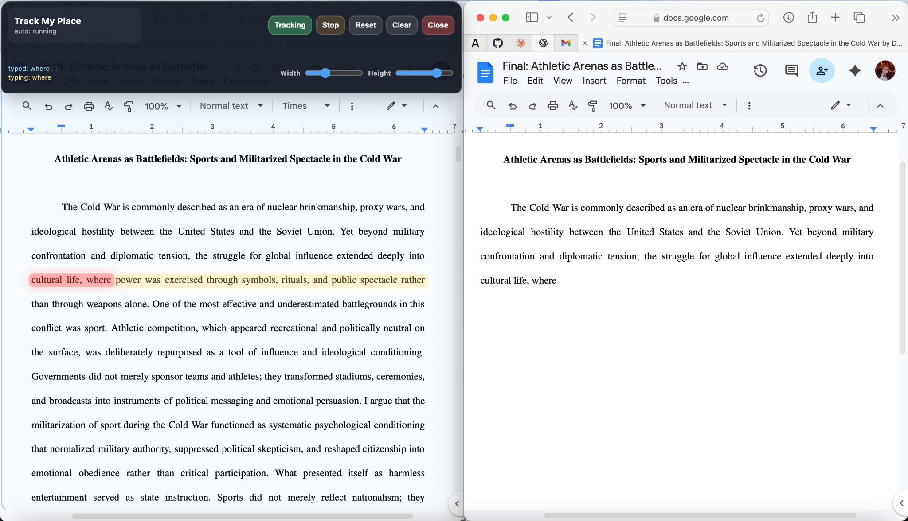
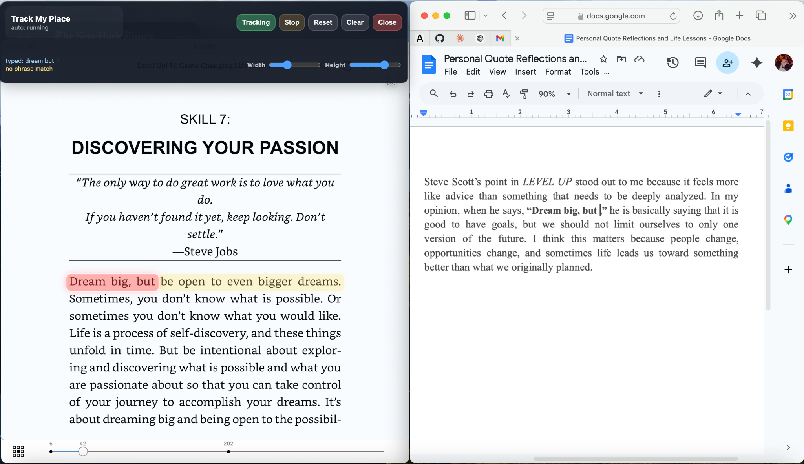

◰
Designed around focus
Track My Place removes one annoying part of reading-heavy writing: relocating the exact line, sentence, or phrase you were using.
macOS overlay for source-to-draft focus
Track My Place is a minimal Mac app that helps you keep your place while writing. It tracks a selected source region, follows your current writing context, and highlights the exact area you are working from so you spend less time rescanning and more time actually writing.

A live source-to-draft workflow: the app stays minimal while the source text remains visually anchored.
Minimal on purpose
The app looks clean because it should not become another distraction. The complexity is hidden in the background: screen capture, OCR, fuzzy matching, visual anchoring, and real-time overlay rendering.
Track My Place removes one annoying part of reading-heavy writing: relocating the exact line, sentence, or phrase you were using.
The matching system is meant to tolerate small mistakes, OCR weirdness, repeated phrases, and natural draft changes instead of depending on perfect text.
The red and yellow highlights give you a fast visual answer: red is where you are, yellow is what comes next, and the rest of the interface gets out of the way.
Background system
Track My Place is not just a highlighter. It turns pixels into text, compares that text against your recent writing, and places highlights back over the original source.
You select the visible area of the page or document that the app should track.
OCR reads the selected screen area and converts the image of text into usable text.
The app compares your recent typed phrase against the recognized source text.
Fuzzy matching helps the app survive typos, OCR mistakes, punctuation differences, and repeated text.
The app places a red current-word anchor and a yellow forward guide directly over the source.
Use cases
Track My Place is strongest when your eyes need to move between a source and a separate writing destination without losing exact position.
Use it while drafting papers, notes, reflections, summaries, or long responses where you need to keep checking the source while building your own wording.
Use it when moving your own rough draft into a final document and you need word-for-word accuracy without skipping a sentence or losing your place.
Long articles, textbook pages, PDFs, and research documents become easier to work through because your current position stays visually anchored.
The app is built for the real workflow: source on one side, writing on the other, and constant movement between the two without burning attention on line tracking.

Versatile by design
Track My Place is not limited to one type of writing setup. As shown here, the app can track a passage from a book while the user writes in a separate document. The same workflow can apply to websites, articles, PDFs, class readings, notes, online textbooks, and other text-heavy sources.
Before and after
Download
This build is for Apple Silicon Macs. The website is designed to stay lightweight while the app download is hosted through GitHub Releases.
When the release is published, replace the placeholder link with the final GitHub Release download URL.